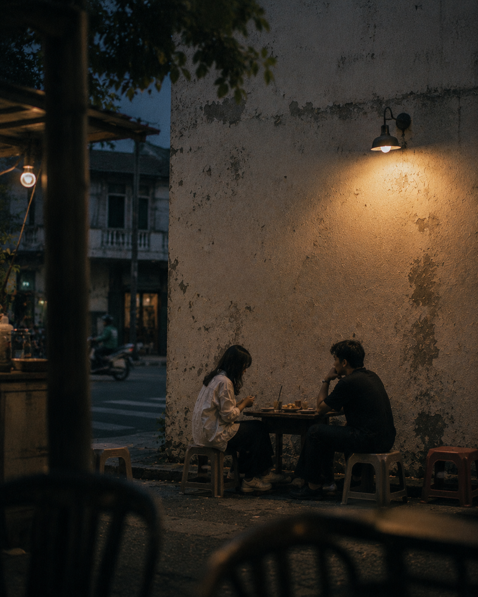
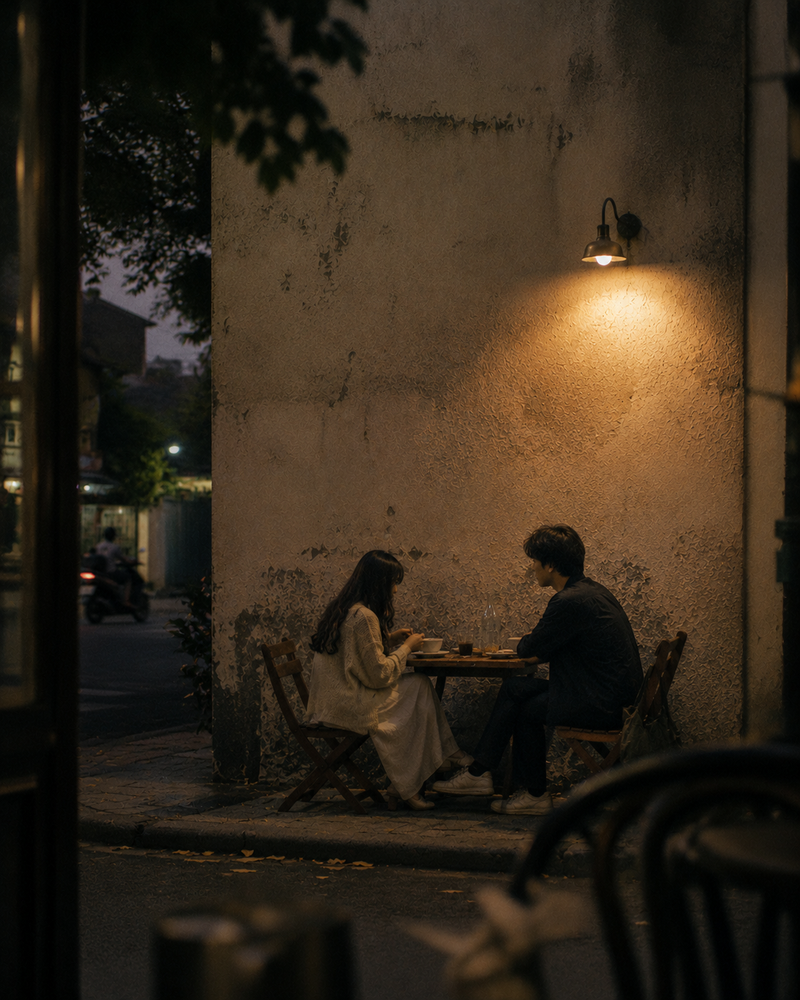
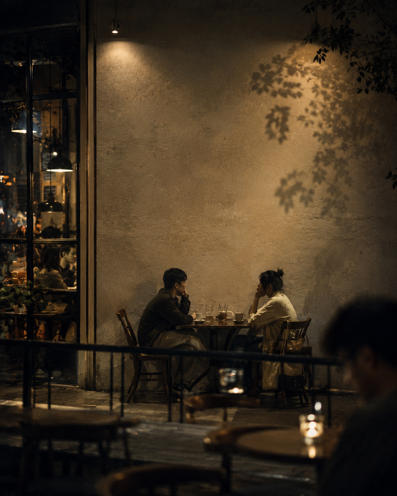
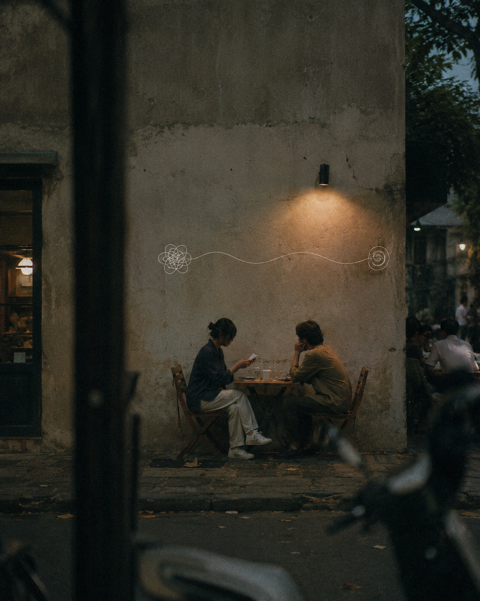

Aku boleh jujur sebentar?
Boleh. Aku dengerin kok.

Tadi pas kamu lama bales, aku takut.
Makasih udah bilang, bukan nebak sendirian.

Aku cuma butuh tahu kita baik baik aja.
Kita baik baik aja. Tadi aku lagi kerja.

Kalau aku nanya lagi lain kali, kamu capek?
Nggak. Mending kamu tanya daripada nahan sendiri.

Kalau nanti aku masih takut juga?
Ya bilang lagi. Kita obrolin bareng.

Makasih ya, udah dengerin.
Makasih juga udah jujur. Aku nggak ke mana mana.
buat yang lagi belajar jujur
Kirim ini ke seseorang yang masih nahan takutnya sendirian.
securewithaldo